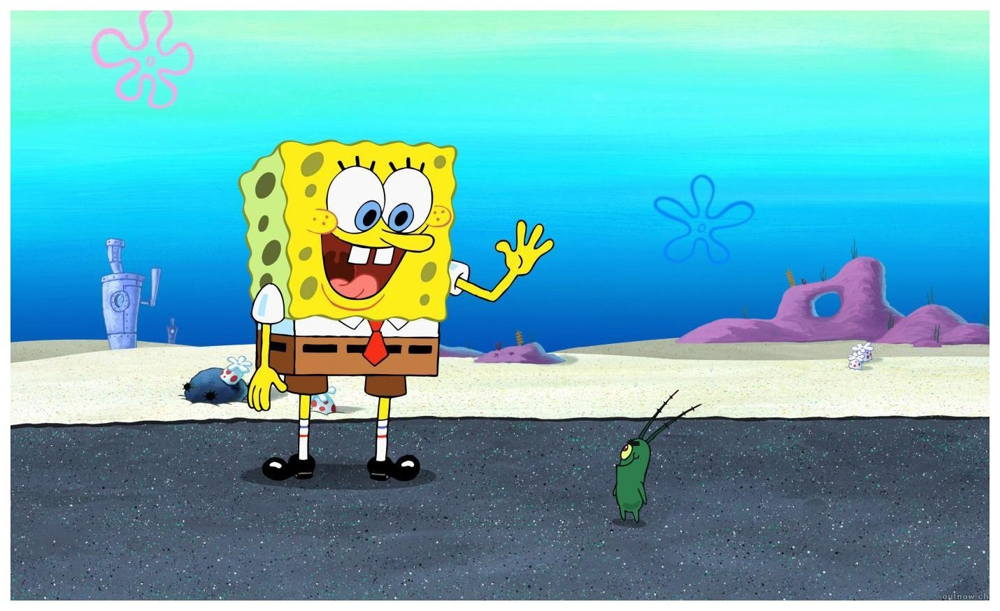

В первой главе я задаю тон всей книге: это в первую очередь развлечение для скучающих гопников-интеллектуалов. Мы с моими маленькими
читателями попробуем представить себе мир как инженерную схему, этакий мысленный каркас. Я пишу о том, что бывает, когда схема несовершенна, и почему банки,
а не негры потеряли дома во время ипотечного кризиса. Рассказываю о появлении страхования и о многих других неожиданных финансовых – и не только – изобретениях.
Что такое информационные технологии XIX века? Как Гитлер выплачивал пенсии? Кто сделал чемодан на колёсиках? Казалось бы, ерунда.
Но, скажу вам по секрету, всё это важно.
Во второй главе я подробно рассказываю о том, откуда взялись акции и корпорации, чтобы вы поняли базовую идею организации современной большой компании – типа Apple или Google.
Как было у римлян, у генуэзских купцов и у английской королевы, кто кормил гусей, кто устраивал туры в Тай и кто кого облапошил.
Третья глава – про современное устройство международных корпораций, советы директоров и проблемы управления такими штуковинами, особенно если внутри сплошные говнюки и кретины.
Как они проникают в кресла председателей правления? Почему Карл Айкан их ловит и анально карает? Чем Америка похожа на тазик с бухлом? Без сомнения, откровений будет много.
В четвёртой главе я рассказываю об акциях, голосованиях и каким образом оно всё оказывается на бирже. Сотона ли вы, если у вас ровно 666 акций? Как избирают Чубайса?
Почему Уоррен Баффет не делает сплиты? Что андеррайтеры называют красной селёдкой и чем они похожи на организаторов концерта Стаса Михайлова? Все эти тайны будут раскрыты.

Это уже моя четвертая лабораторная!